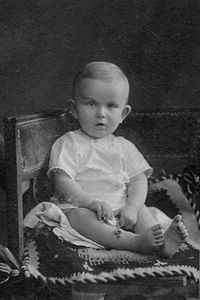

Народився Роман Шухевич у місті Львові, на вулиці Собіщизни, будинок № 7 (сучасна вулиця Довбуша, будинок № 2, квартира належала його діду, Володимиру Шухевичу
та бабусі Герміні 30 червня 1907 року. Батьки — Осип-Зиновій Шухевич та Євгенія Шухевич (дівоче прізвище Стоцька). Шухевичі належали до тих галицьких священницьких родів
Дитинство Шухевича минуло у містечку Краківці на Львівщині, де його батько працював у повітовому суді. 1914 року його родина переїхала до Камінки-Струмілової (тепер місто Кам'янка-Бузька), де Осип Шухевич обіймав посаду судді. Тут Роман Шухевич закінчив початкову школу.

Продовжив навчання у Львові у філії Академічної гімназії. У цей період (1917—1925) молодий Шухевич мешкав під опікою Герміни Шухевич на вулиці Собіщини, № 7. Завдяки творам народного мистецтва, які зібрав його дід Володимир, у будинку панував дух патріотизму.
Оселившись у Львові, Роман став свідком подій, пов'язаних з утворенням 1 листопада 1918 року 3ахідноукраїнської Народної Республіки (ЗУНР) та героїчною боротьбою Української галицької армії (УГА) з польськими військами.
Роман Шухевич добре вчився в гімназії, його річні свідоцтва за 1921—1924 pp. містять переважно відмінні оцінки з основних предметів
Юнак також успішно займався музикою та співом, а на початку 1930-х років став студентом заочного курсу музичного інституту ім. М. В. Лисенка по класу фортепіано.
Велику увагу Роман Шухевич приділяв спорту. Він добре грав у баскетбол, волейбол і футбол, займався бігом, плаванням, лижним та планерним спортом. На Запорозьких іграх 1923 року у Львові Роман Шухевич зумів поставити рекорди у бігу з перешкодами на 400 м і у плаванні на 100 метрів
"Український політик, громадський і державний діяч, військовик"